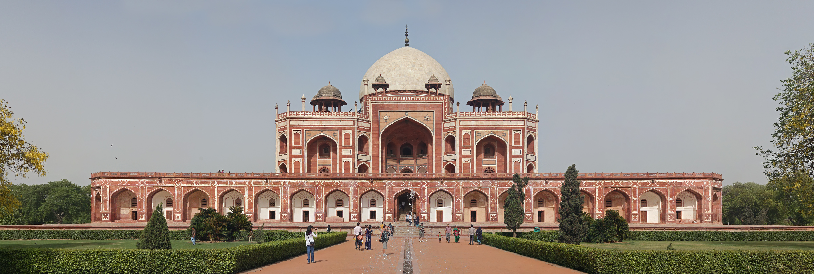
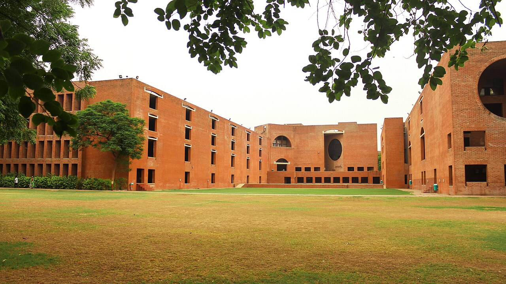
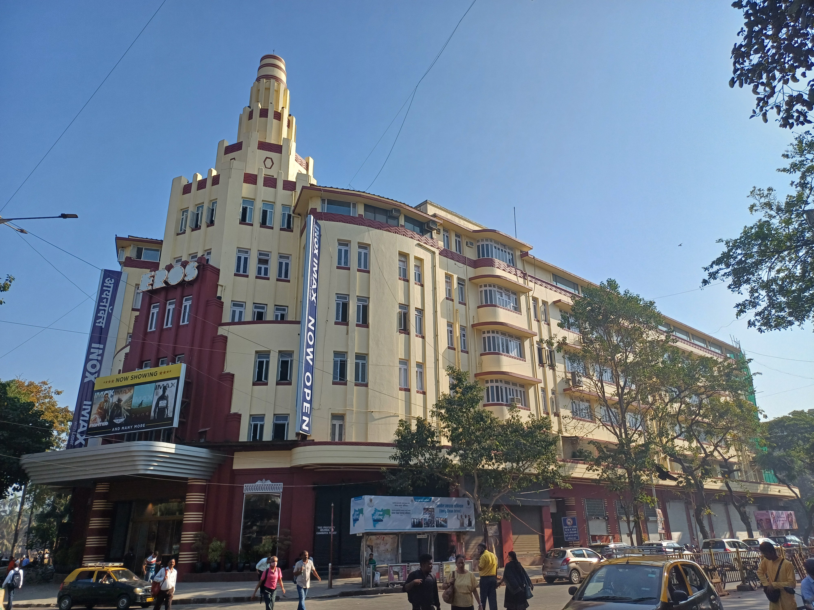

Curated editorial
Featured collections
Handpicked routes through India's built legacy — for architects, students, travellers and photographers.
 14 buildings◈
14 buildings◈India's Greatest Buildings
The essential works every architect should experience in person.

UNESCO▤World Heritage Sites
India's 40+ UNESCO-inscribed monuments and cultural landscapes.

Modern Masters▥Modern Masters
Kahn, Corbusier, Correa, Doshi, Raje — the architects who shaped modern India.
 Concrete▦
Concrete▦Brutalist India
Raw concrete civic monuments from the decades after independence.

1920–1950◹Art Deco India
Mumbai's seafront ensemble — the world's second-largest Art Deco collection.
 Palaces♜
Palaces♜Palace Architecture
Rajput, Mughal and Indo-Saracenic royal residences across the subcontinent.
Hidden Gems
Sacred Architecture
Adaptive Reuse
Public Spaces
Landscapes
Museums
Weekend Destinations
Women Architects of India
Lost Buildings